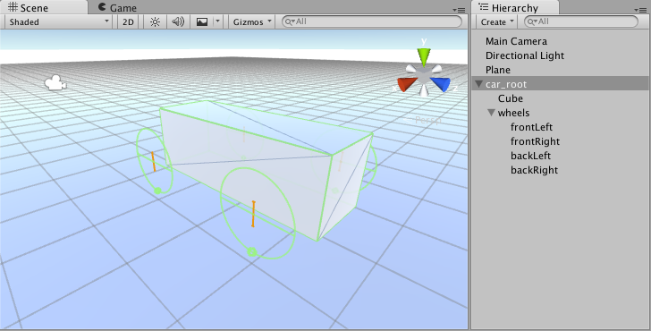

Wheel Collider Tutorial
The Wheel Collider component is powered by the PhysX 3 Vehicles SDK.
This tutorial takes you through the process of creating a basic functioning car.
To start, select GameObject > 3D Object > Plane. This is the ground the car is going to drive on. To keep it simple, make sure the ground has a Transform of 0 (on the Transform component in the Inspector Window, click the Settings cog and click Reset). Increase the Transform's Scale fields to 100 to make the Plane bigger.
Create a basic car skeleton
- First, add a GameObject to act as the car root GameObject. To do this, go to GameObject > Create Empty. Change the GameObject's name to
car_root. - Add a Physics 3D Rigidbody component to
car_root. The default mass of 1kg is too light for the default suspension settings; change it to 1500kg to make it much heavier. - Next, create the car body Collider. Go to GameObject > 3D Object > Cube. Make this cube a child GameObject under
car_root. Reset the Transform to 0 to make it perfectly aligned in local space. The car is oriented along the Z axis, so set the Transform's Z Scale to 3. - Add the wheels root. Select
car_rootand GameObject > Create Empty Child. Change the name towheels. Reset the Transform on it. This GameObject is not mandatory, but it is useful for tuning and debugging later. - To create the first wheel, select the
wheelsGameObject, go to GameObject > Create Empty Child, and name itfrontLeft. Reset the Transform, then set the Transform Position X to -1, Y to 0, and Z to 1. To add a Collider to the wheel, go to Add component > Physics > Wheel Collider. - Duplicate the
frontLeftGameObject. Change the Transform's X position to 1. Change the name tofrontRight. - Select both the
frontLeftandfrontRightGameObjects. Duplicate them. Change the Transform's Z position of both GameObjects to -1. Change the names torearLeftandrearRightrespectively. - Finally, select the
car_rootGameObject and use the Move Tool to raise it slightly above the ground.
Now you should be able to see something like this:

To make this car actually drivable, you need to write a controller for it. The following code sample works as a controller:
using UnityEngine;
using System.Collections;
using System.Collections.Generic;
public class SimpleCarController : MonoBehaviour {
public List<AxleInfo> axleInfos; // the information about each individual axle
public float maxMotorTorque; // maximum torque the motor can apply to wheel
public float maxSteeringAngle; // maximum steer angle the wheel can have
public void FixedUpdate()
{
float motor = maxMotorTorque * Input.GetAxis("Vertical");
float steering = maxSteeringAngle * Input.GetAxis("Horizontal");
foreach (AxleInfo axleInfo in axleInfos) {
if (axleInfo.steering) {
axleInfo.leftWheel.steerAngle = steering;
axleInfo.rightWheel.steerAngle = steering;
}
if (axleInfo.motor) {
axleInfo.leftWheel.motorTorque = motor;
axleInfo.rightWheel.motorTorque = motor;
}
}
}
}
[System.Serializable]
public class AxleInfo {
public WheelCollider leftWheel;
public WheelCollider rightWheel;
public bool motor; // is this wheel attached to motor?
public bool steering; // does this wheel apply steer angle?
}
Create a new C# script (Add Component > New Script), on the car_root GameObject, copy this sample into the script file and save it. You can tune the script parameters as shown below; experiment with the settings and enter Play Mode to test the results.
The following settings are very effective as a car controller:

You can have up to 20 wheels on a single vehicle instance, with each of them applying steering, motor or braking torque.
Next, move on to visual wheels. As you can see, a Wheel Collider doesn't apply the simulated wheel position and rotation back to the Wheel Collider's Transform, so adding visual wheel requires some tricks.
You need some wheel geometry here. You can make a simple wheel shape out of a cylinder. There could be several approaches to adding visual wheels: making it so that you have to assign visual wheels manually in script properties, or writing some logic to find the corresponding visual wheel automatically. This tutorial follows the second approach. Attach the visual wheels to the Wheel Collider GameObjects.
Next, change the controller script:
using UnityEngine;
using System.Collections;
using System.Collections.Generic;
[System.Serializable]
public class AxleInfo {
public WheelCollider leftWheel;
public WheelCollider rightWheel;
public bool motor;
public bool steering;
}
public class SimpleCarController : MonoBehaviour {
public List<AxleInfo> axleInfos;
public float maxMotorTorque;
public float maxSteeringAngle;
// finds the corresponding visual wheel
// correctly applies the transform
public void ApplyLocalPositionToVisuals(WheelCollider collider)
{
if (collider.transform.childCount == 0) {
return;
}
Transform visualWheel = collider.transform.GetChild(0);
Vector3 position;
Quaternion rotation;
collider.GetWorldPose(out position, out rotation);
visualWheel.transform.position = position;
visualWheel.transform.rotation = rotation;
}
public void FixedUpdate()
{
float motor = maxMotorTorque * Input.GetAxis("Vertical");
float steering = maxSteeringAngle * Input.GetAxis("Horizontal");
foreach (AxleInfo axleInfo in axleInfos) {
if (axleInfo.steering) {
axleInfo.leftWheel.steerAngle = steering;
axleInfo.rightWheel.steerAngle = steering;
}
if (axleInfo.motor) {
axleInfo.leftWheel.motorTorque = motor;
axleInfo.rightWheel.motorTorque = motor;
}
ApplyLocalPositionToVisuals(axleInfo.leftWheel);
ApplyLocalPositionToVisuals(axleInfo.rightWheel);
}
}
}
One important parameter of the Wheel Collider component is Force App Point Distance. This is the distance from the base of the resting wheel to the point where the wheel forces are applied. The default value is 0, which means to apply the forces at the base of the resting wheel, but actually, it is wise to have this point located somewhere slightly below the car's centre of mass.
Note: To see the Wheel Collider in action, download the Vehicle Tools package, which includes tools to rig wheeled vehicles and create suspension for wheel colliders.